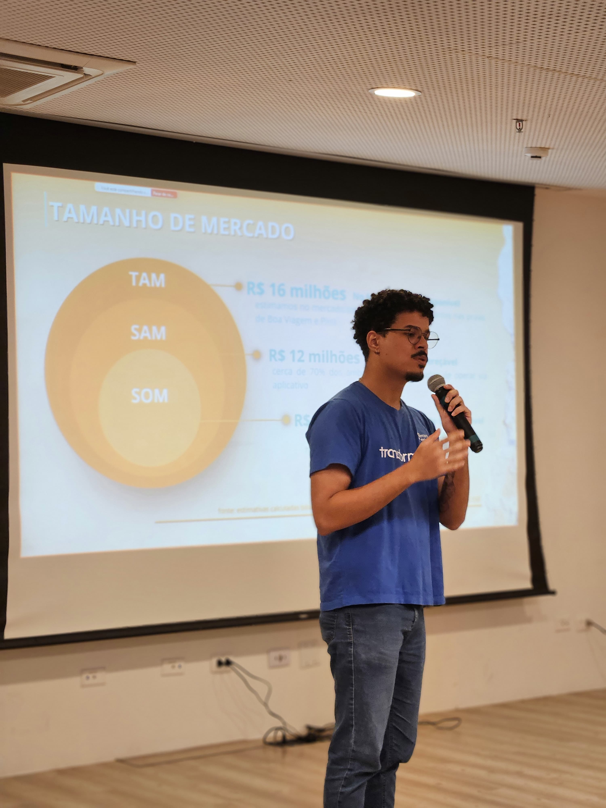
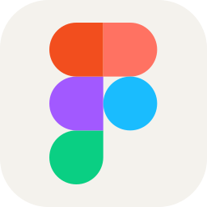
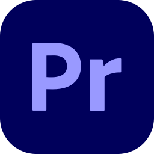
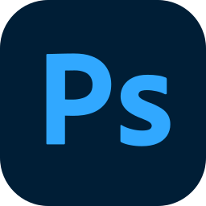

Bem Vindo(a),
me chamo Karllos Braga
Esse é o meu portfólio
Sobre Mim
Sempre fui apaixonado por tecnologia e tinha certeza de que essa era a carreira que eu queria seguir. Minha jornada começou em 2022, estudando Engenharia Elétrica e Telecomunicações na UPE, mas logo descobri minha verdadeira vocação e migrei para Engenharia da Computação no CIn da UFPE.
Sou movido a desafios e inovação. Logo no meu primeiro hackathon na vida o Cidades Inteligentes no Porto Digital, conquistei o 3º lugar com o projeto GreenPulse. Essa energia me levou a outras vitórias, como o 4º lugar no Ideaithon do Senac (Projeto Viarte) e o Top 10 no Hackathon Bemobi (Projeto Bimo).
Apoiado por certificações da AWS e do Senac, continuo trabalhando e me aperfeiçoando na criação de produtos digitais, focado principalmente em Web Design, UX/UI e desenvolvimento Full Stack.
Backend
possuo habilidades com banco de dados, POO, classes, encapsulamentos dentre várias outras ferramentas
UX/UI
tenho experiência em UX e design em ferramentas desde Figma até edição de Video com o Premiere
Web Developer
HTML, CSS e javascript, continuo trabalhando para me aperfeiçoar ainda mais em Front End e Web Design
Cloud AWS
Atualmente, sigo fazendo Curso AWS para Cloud e IA
Desenvolvimento de Sistemas – Senac (2025 – 180h)
AWS Cloud e IA - AWS (2026 - Atual)
Engenharia da Computação 2026 - Atual
Sigo Cursando Superior em Engenharia da Computação na UFPE/ Cin

Meus Serviços
</>
Web Design
Para Web Design, HTML, CSS, javascript são as ferramentas que possuo habilidades para desenvolver, além de versionamento em git e Github para trabalhos em equipe. Além de conhecimentos sobre designe User Experience.
UX
UI/UX Design
Em UX/UI tenho muitos projetos em Figma, desde Hackathons e Cursos, todos utilizaram figmas para design antes da próxima etapa do desenvolvimento. Ademais, tenho conhecimentos em outras áreas do design como premiere, e até modelagem em 3d para impressão com o Autodesk e Autocad.



BackEnd
Em Backend, participei de desenvolvimentos em Python, no framework Django, C e C++ com Arduino, banco de dados com Mysql e Postgresql além do serviço da aws para Cloud e IA.